Detection & classification of SRKW calls
through human & machine learning, in real-time
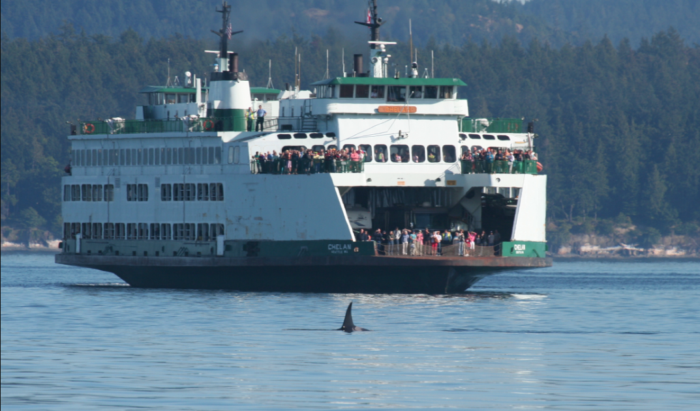Val Veirs and Scott Veirs, Beam Reach, SPC
Data Workshop
Organized by ONC/Merdian | 21-22 Nov 2019 | Victoria, BC
Orcasound 2.0: new locations, node hardware/software, and app in 2019
| 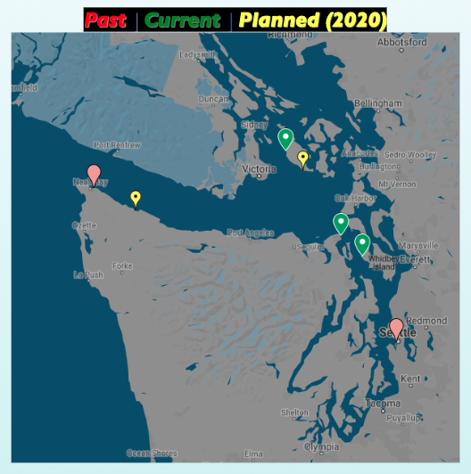 | 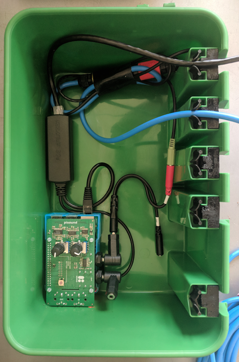 | 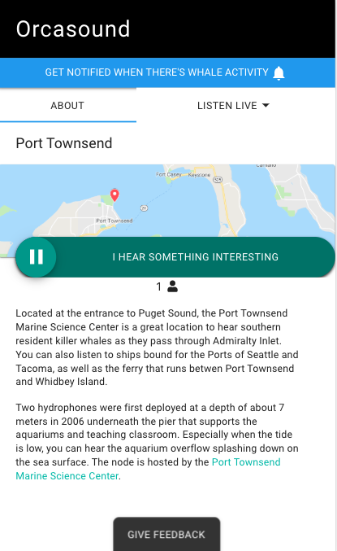 |
Vision: Open source software, open data access, real-time engagement of citizen scientists and cloud-computing
Real-time inspiration: ~5 decades of live-stream pioneering by OrcaLive (Paul Spong and Helena Symonds)
Thanks to: 2017 Kickstarter backers, "hall of fame" devs & designers, and the 2018-2019 hackathons at UW, Microsoft, and DemocracyLab
Public launch of Orcasound app in Nov 2018: live.orcasound.net
Beta-testing more interactive UI in fall 2019: beta.orcasound.net
Resources for teaching humans (& machines?)
Outreach/education nodes
Growing signal library |
Orcasound machine learning efforts
Open training & testing data for SRKW models
- Documentation at Orcasound's orcadata repository Github wiki
- Storage in Orcasound's acoustic sandbox on S3
- Annotation tools: Audacity and Pod.Cast
"Dory" (Erika Pelaez)
Orcasound hackathaon participant, 2018-2019
|
Semi-supervised(-ish) learning approach:
|
UW ocean acoustic hack days (Nov 2018)
Led by Valentina Staneva and Shima Abadi
Challenge: find SRKW calls in Oregon shelf OOI/RSN hydrophone node (80 m depth) during period when NOAA satellite teg track narrows down when they may have been audible...
DEMO validation tool: WhaleDr
Microsoft Pod.Cast annotation tool
Product of July 2019 4-day Microsoft hackathon
Developed by Akash Mahajan, Prakruti Gogia, & Nithya Govindarajan
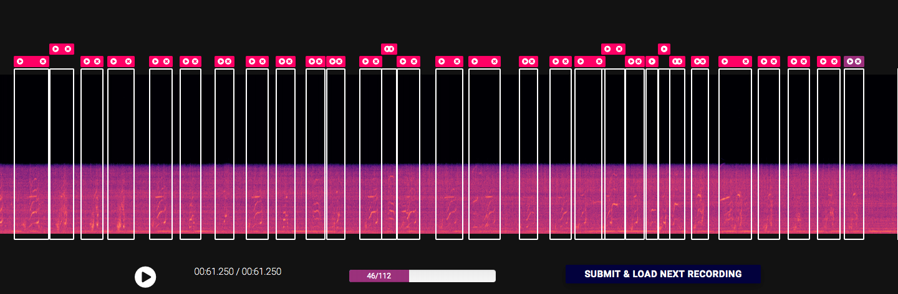Microsoft Pod.Cast ML model
VGG-ish, ResCNN, transfer learning (Akash, Prakruiti, Nithya)
| 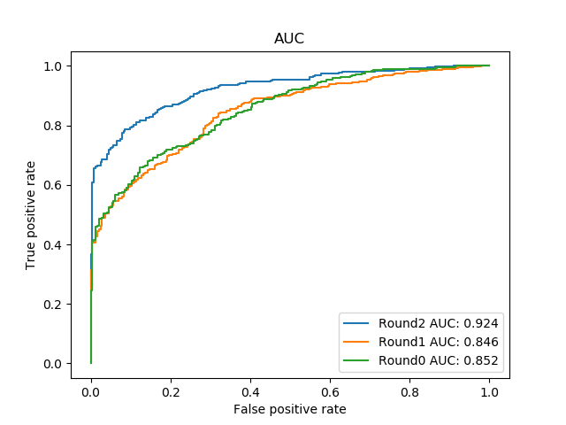 |
UW grad students
Jennifer, John, Wai Sing, Yuhao
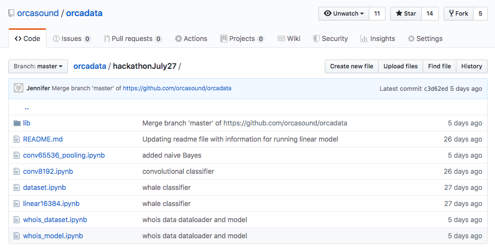Localization of orca calls
Leads to: call source level, lombard effect, & great curiosities about cetacean communication
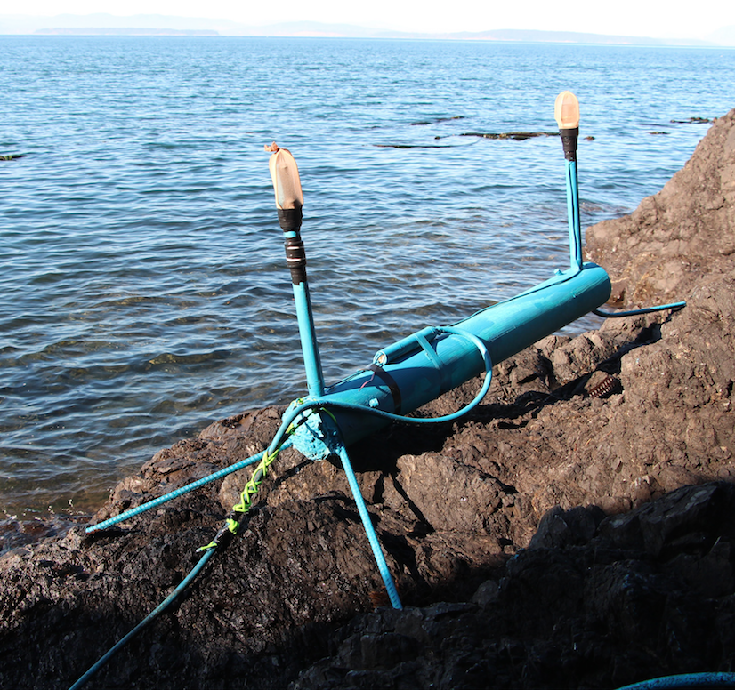Orca communication animation
Rare separation of a calf documents call-respons in SRKWs
Red dot is mother/brother location; blue dot is calf. Towed array is in lower right corner.
Orcasound DC (~2002): WhoListener
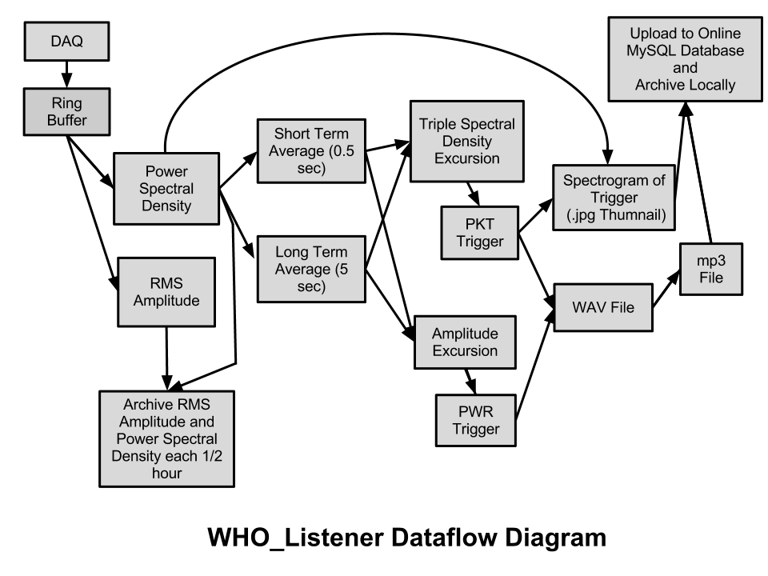Admiralty Inlet study (unpublished): of 22 SRKW transits, humans detect 45%, Wholistener 64%, combined 77%. (71/79/93% during local daytime)
During 2009-2012 *many* .jpg spectrograms and .mp3 clips were archived (example raw data directory) & there is a mySQL database with O(1000) expert validations
Orcasound DC (2009): ASA Portland, OR
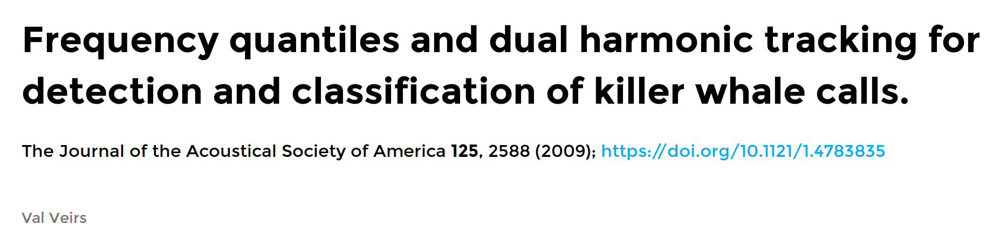Orcasound DC: flow chart
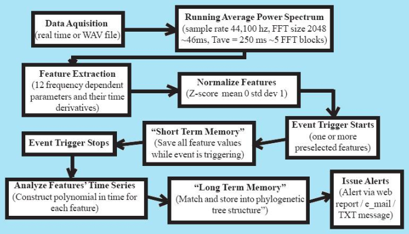Orcasound DC: triggering
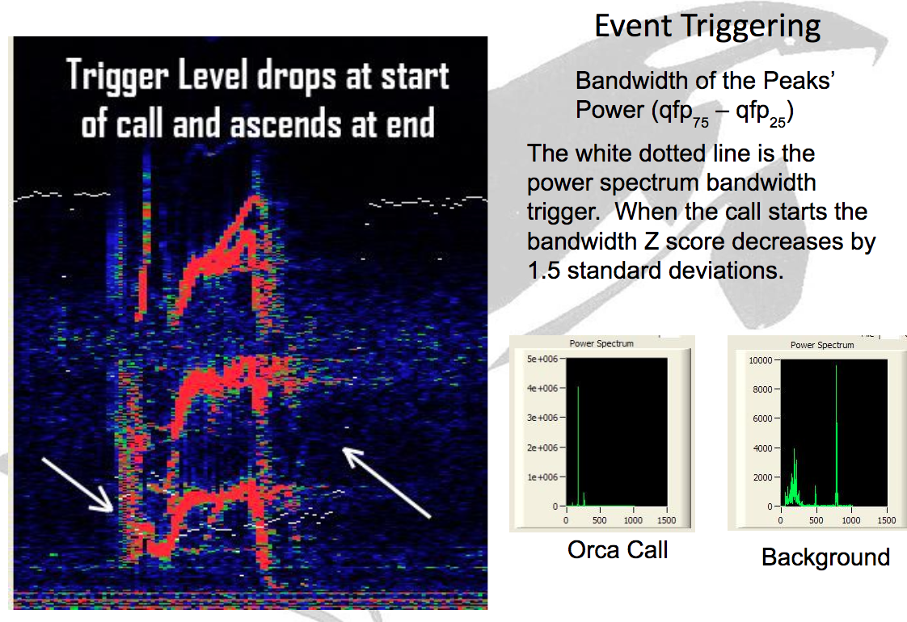Current DC effort: Zorbita
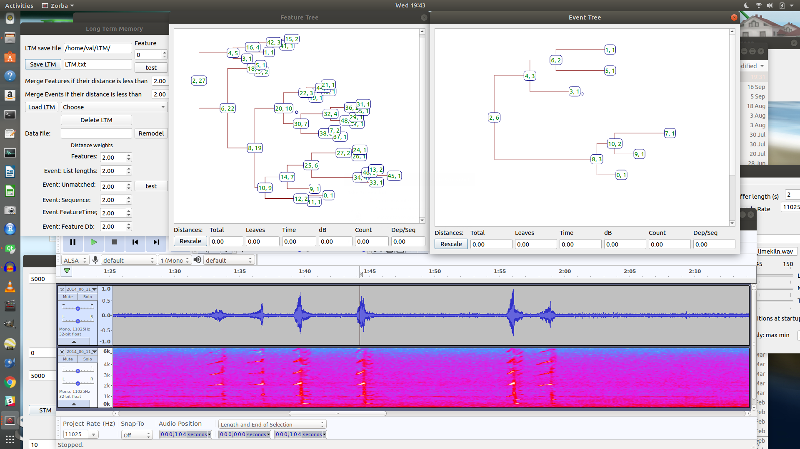From Visual Basic to QT to the clouds?
Questions?
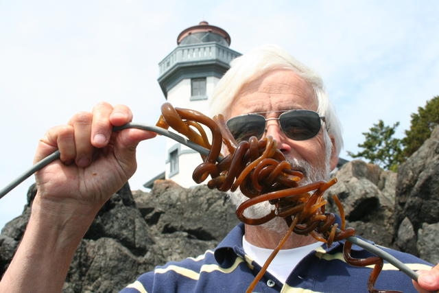
/